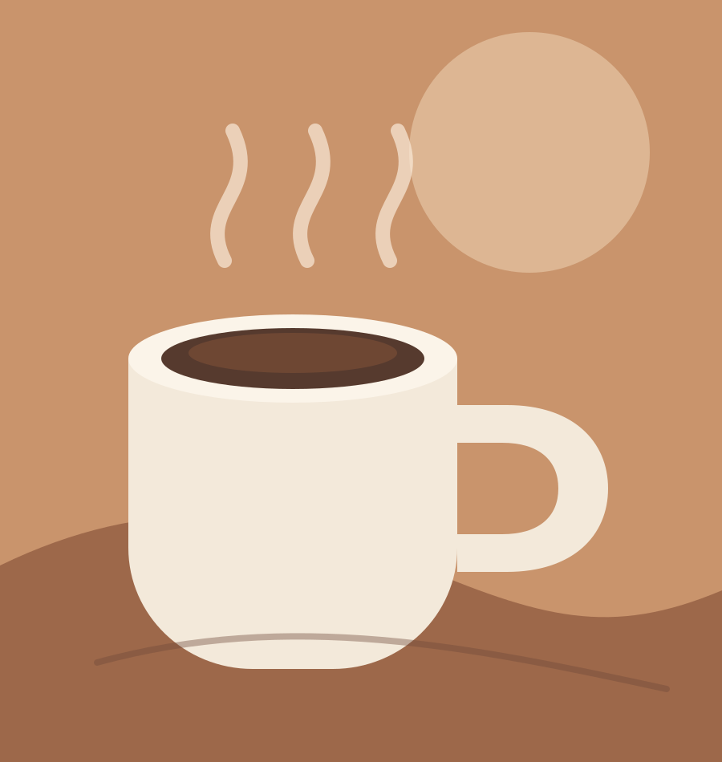

Mais pedidoR$ 9,90
Espresso da casa
Intenso, encorpado e extraído na medida certa com grãos selecionados.
CAFÉ ESPECIAL • IDEIAS FRESCAS
No Café & Código, cada xícara acompanha uma boa conversa, uma página de código ou simplesmente alguns minutos para respirar.
Explorar o cardápio
NOSSA HISTÓRIA
Nascemos da vontade de juntar duas coisas que fazem o dia acontecer: café bem feito e curiosidade. Aqui, estudantes, criadores e vizinhos encontram uma mesa, uma tomada e espaço para a próxima ideia.
APAREÇA PARA UMA VISITA
Rua das Palmeiras, 108
Centro, São Paulo - SP
(11) 3333-2024
ola@cafeecodigo.local